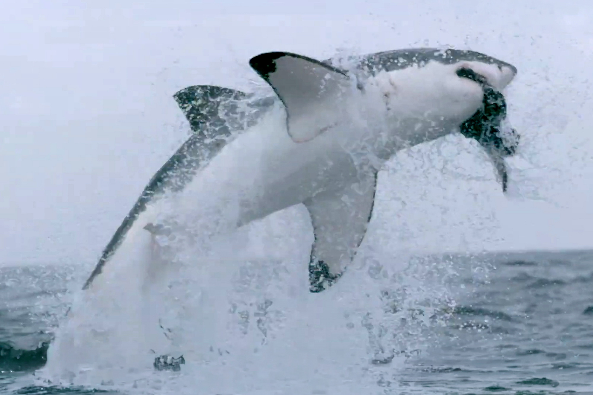
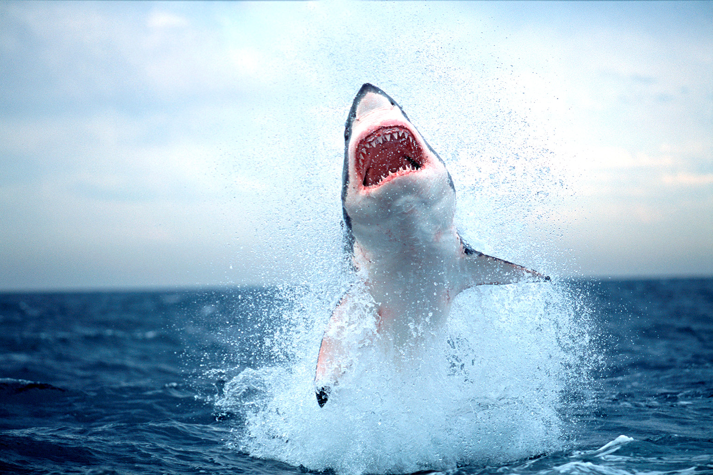

Here, we share the latest news, research, and fascinating facts about Great White Sharks. Our blog is dedicated to educating the public about these incredible creatures and promoting their conservation.
Stay tuned for updates on shark behavior, conservation efforts, and exciting encounters with these magnificent predators. We also feature guest posts from marine biologists, conservationists, and shark enthusiasts who share their experiences and insights.
Engage with Us! We encourage our readers to engage with us by leaving comments, asking questions, and sharing their own stories about Great White Sharks.
Thank you for visiting our blog, and we hope you enjoy exploring the world of Great White Sharks with us!

Great White Shark hunting prey
Sharks Hunting Prey!
Great White Sharks are apex predators, meaning they are at the top of the food chain. They play a crucial role in maintaining the balance of marine ecosystems. Despite their fearsome reputation, they are not mindless killers and are often curious about their surroundings.
Great White Sharks primarily feed on marine mammals such as seals and sea lions, but they also consume fish and seabirds. They have a highly developed sense of smell, allowing them to detect prey from great distances. When hunting, they often use a technique called "breaching," where they launch themselves out of the water to surprise their prey. This behavior is not only effective for hunting but also a spectacular sight for observers.
Understanding the hunting behavior of Great White Sharks is essential for their conservation and for promoting safe interactions between humans and these incredible predators.

Great White Shark breaching
Great White Shark Breaching Behavior
Breaching is a fascinating behavior exhibited by Great White Sharks, where they propel themselves out of the water, often while hunting seals. This dramatic display is not only a testament to their power and agility but also serves as an effective hunting strategy. Breaching allows sharks to surprise their prey, increasing their chances of a successful capture.
Researchers have observed that breaching is more common in areas with high seal populations, such as the coasts of South Africa and Australia. The behavior is often accompanied by a loud splash, which can be heard from a distance. Scientists continue to study this behavior to better understand the ecological role of Great White Sharks and their interactions with prey species.
For those interested in marine biology and shark behavior, witnessing a Great White Shark breach is an unforgettable experience that highlights the incredible adaptations of these apex predators.